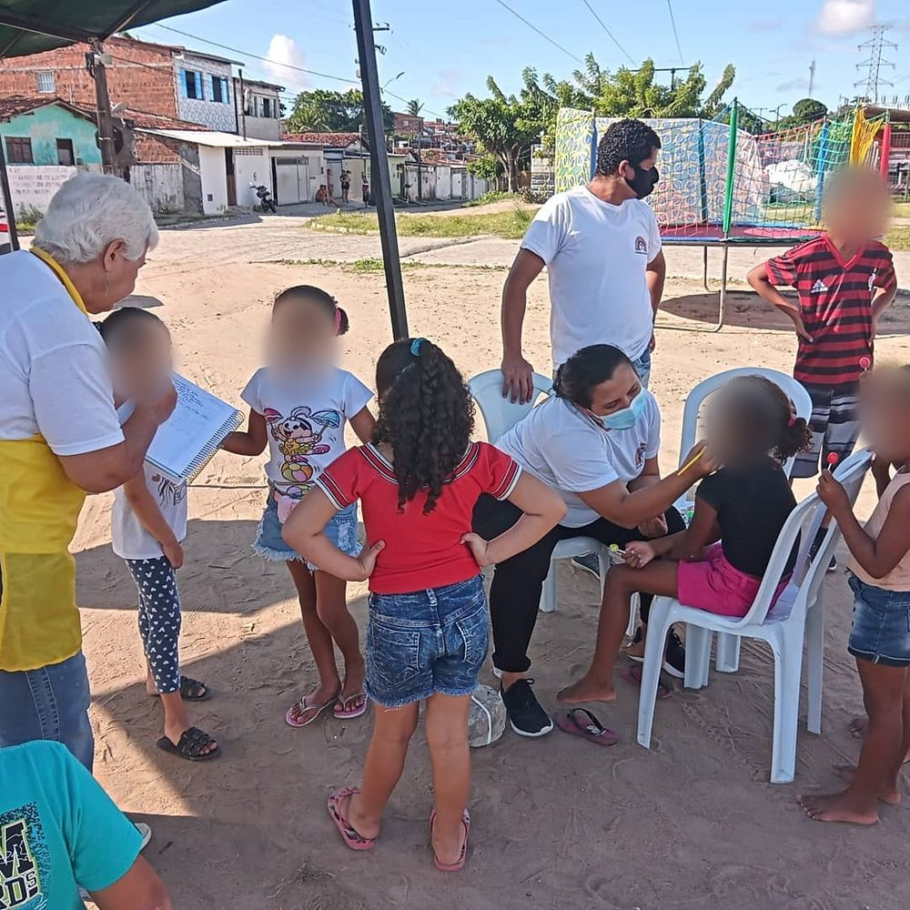
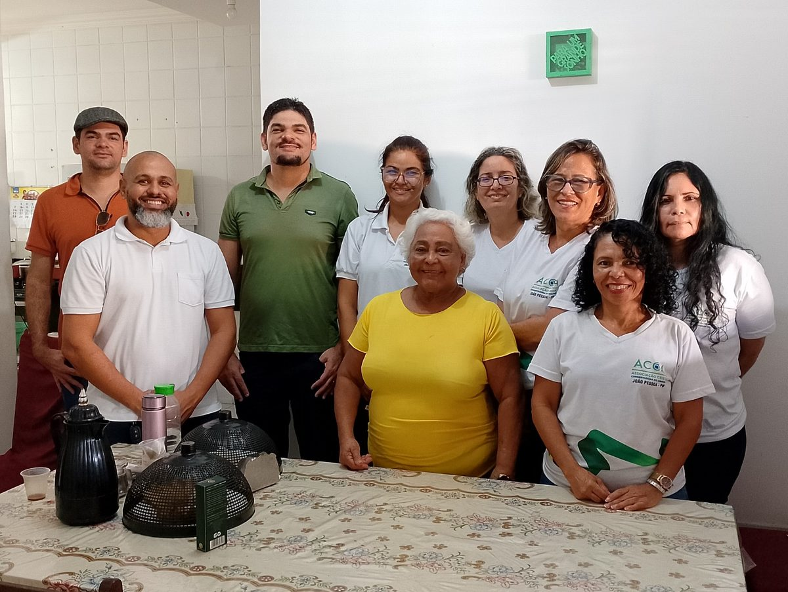
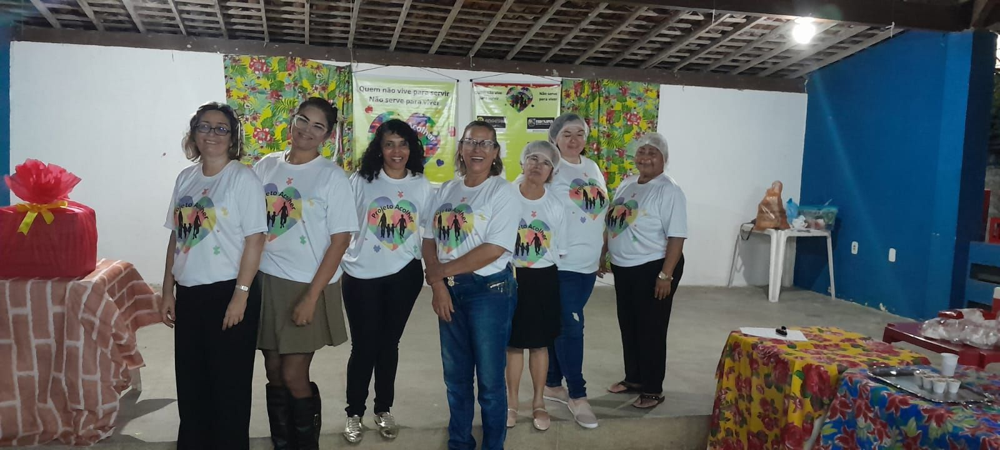
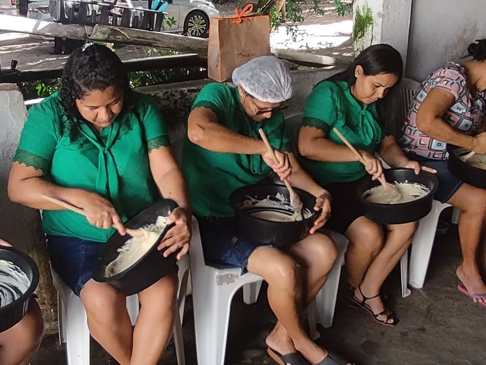
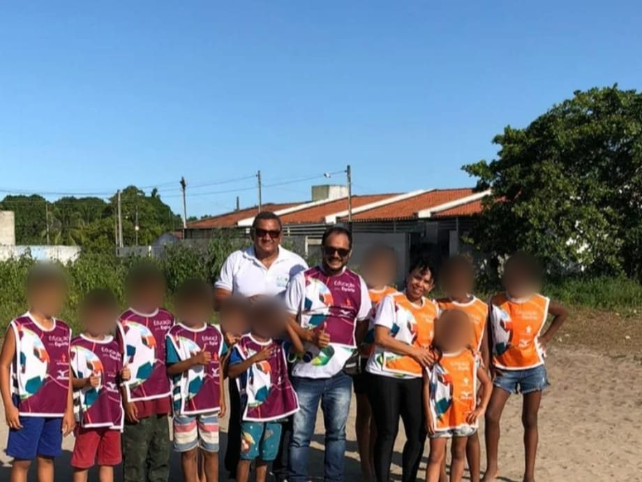
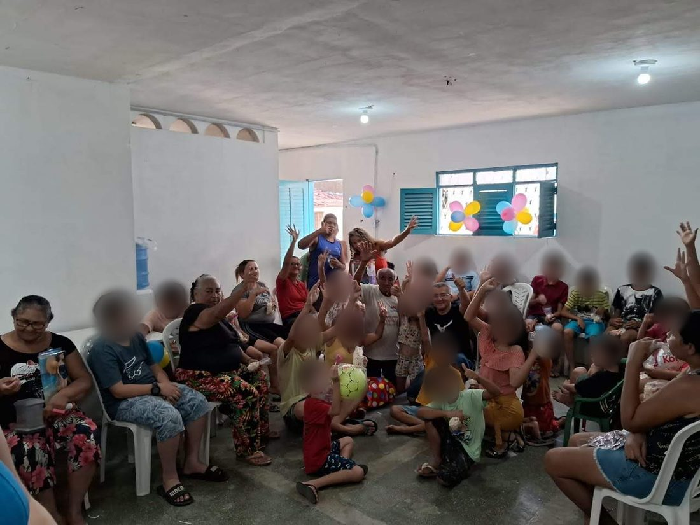
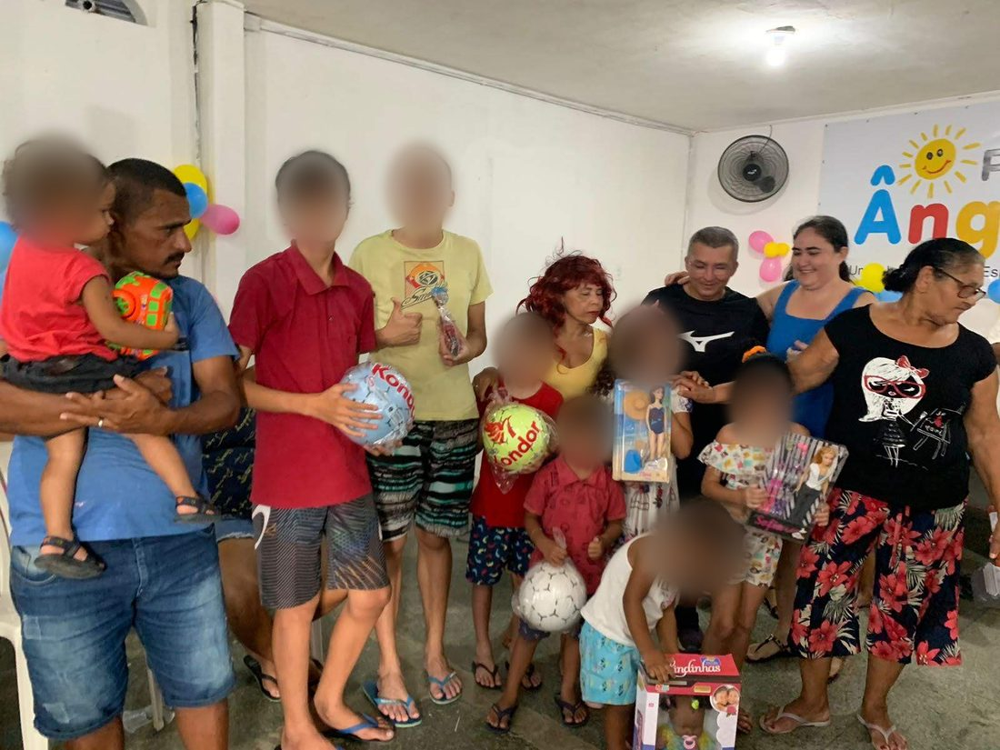
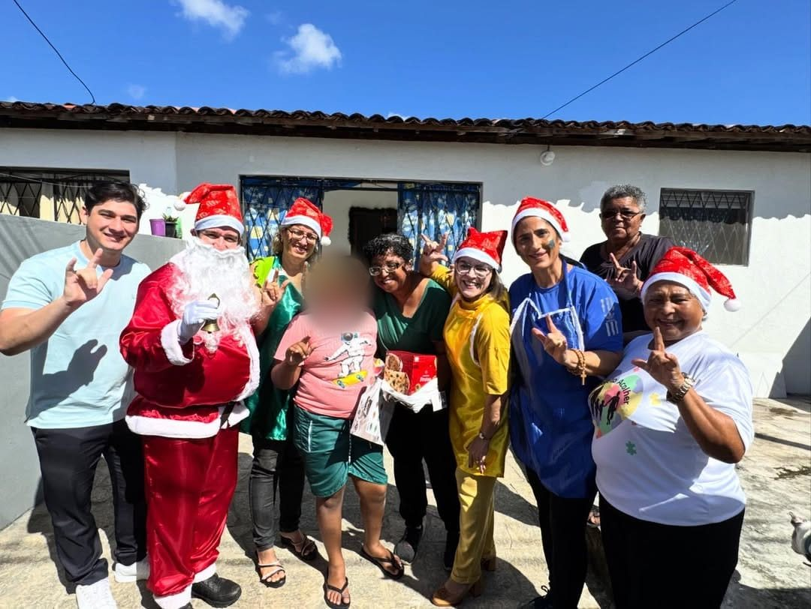
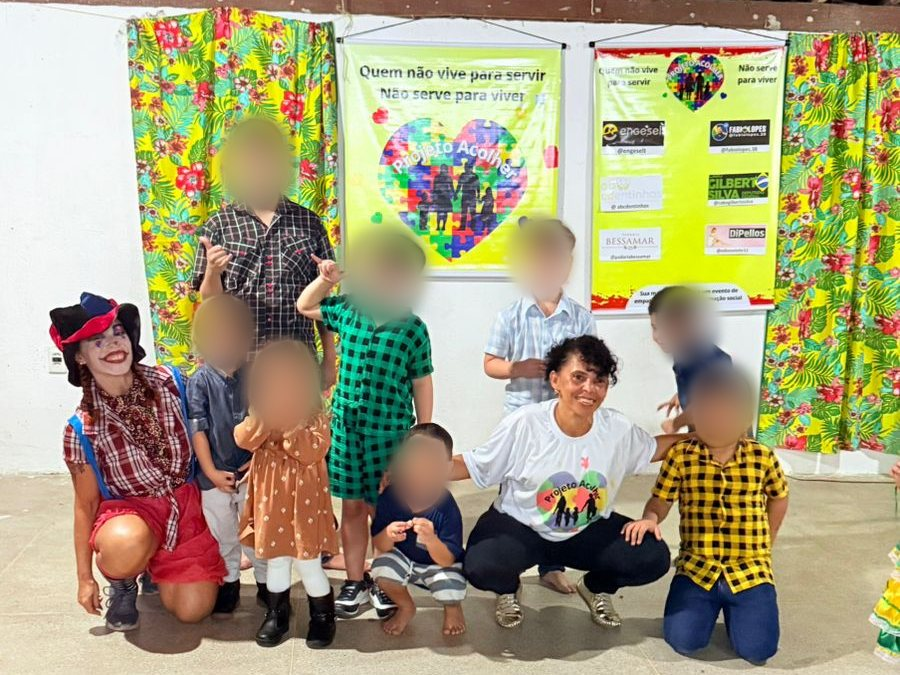
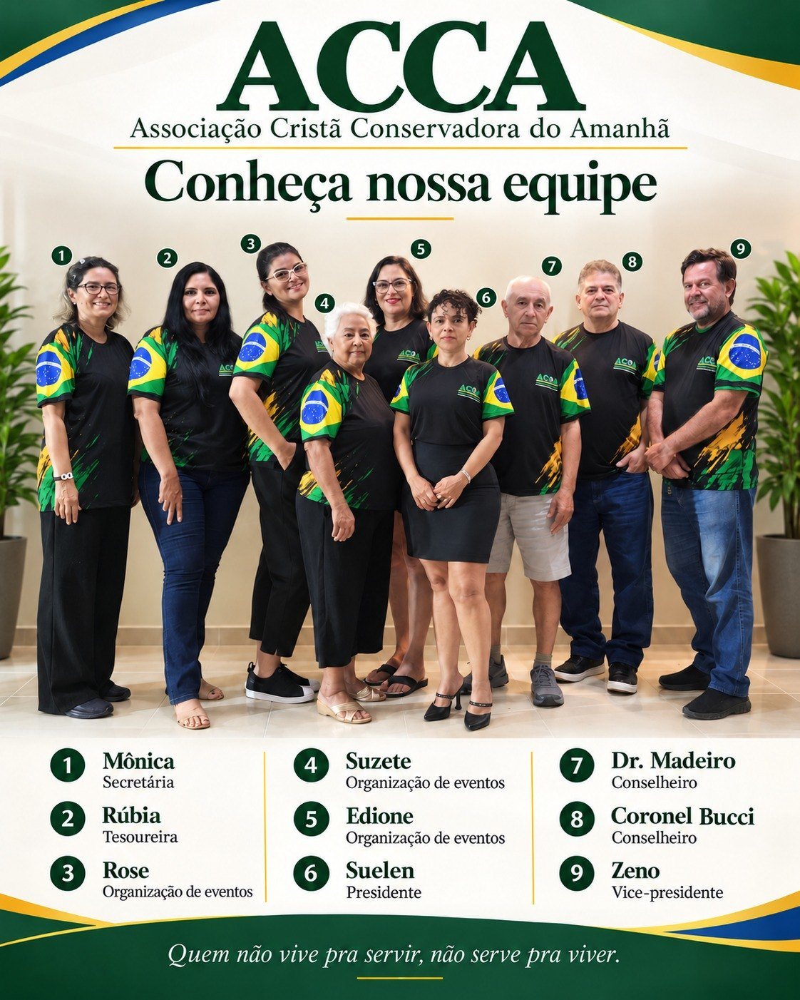

Atuação social e comunitária independente, fundada em João Pessoa/PB desde 2021 — levando acolhimento, cultura, esporte e oportunidade às famílias e comunidades da Paraíba.
"Quem não vive para servir, não serve para viver."
2021
Ano de fundação
11+
Territórios atendidos
100%
Trabalho voluntário

Ação social da ACCA

Desde 2021
Atuação social e comunitária em João Pessoa/PB
A ACCA – Associação Cristã Conservadora do Amanhã é uma organização da sociedade civil fundada em 6 de junho de 2021, em João Pessoa/PB, e registrada em cartório em 14 de julho do mesmo ano.
Atuamos nas áreas de assistência social, cultura, educação, inclusão, esporte e fortalecimento comunitário, desenvolvendo ações para crianças, adolescentes, pessoas com deficiência, pessoas idosas, mulheres e famílias em situação de vulnerabilidade social — promovendo acolhimento, participação, convivência e desenvolvimento humano.
Nosso diferencial
Atuação independente, gerida por voluntários, mobilização comunitária e doações — sem depender de emendas parlamentares ou convênios governamentais.
Público prioritário
Uma trajetória sustentada pelo trabalho voluntário, pelas doações e pela confiança das comunidades atendidas.

Onde tudo começou
João Pessoa · Paraíba
2021
30 maio 2021
A mobilização realizada na Comunidade Taipa marcou o início da atuação da ACCA. Sem estrutura ou recursos públicos, o trabalho nasceu do desejo de servir, acolher famílias e transformar realidades.
06 junho 2021
A Associação Cristã Conservadora do Amanhã foi fundada, consolidando oficialmente um trabalho que já surgia com forte participação comunitária e compromisso social.
14 julho 2021
A instituição obteve seu registro e passou a desenvolver sua trajetória de forma regularizada, ampliando gradualmente sua atuação.
2021 — 2026
Ações de assistência social, cultura, recreação, inclusão, esporte e fortalecimento de vínculos passaram a alcançar crianças, adolescentes, pessoas com deficiência, pessoas idosas e famílias em vulnerabilidade.
14 agosto 2024
Assembleia Geral aprova a atualização do Estatuto Social e empossa a Diretoria Executiva para o mandato 2024–2028.
"A Comunidade Taipa permanece como símbolo do nosso início."
Quatro frentes de atuação conectadas às necessidades reais dos territórios atendidos.
Projeto "Pão na Comunidade" — oficinas de pães e trufas, kits produtivos e mobilização comunitária para gerar renda e autonomia às famílias.
Foco em crianças autistas, pessoas com T21, famílias atípicas e cuidadores. Projeto "Inclusão em Campo JP", com acesso ao esporte, à cultura e à convivência social.
Caravanas sociais nas comunidades: recreação, cortes de cabelo, limpeza de pele, teatro de fantoches e acolhimento — serviço e cuidado mais perto das famílias.
Eventos inclusivos que fortalecem vínculos e celebram a comunidade ao longo do ano, como o Arraiá Inclusivo e o Natal Inclusivo.
Capacitação
Oficinas e aprendizagem prática
Produção
Pães, trufas e outros produtos
Apoio
Kits produtivos e mobilização
Autonomia
Renda, confiança e oportunidade
Ao longo de sua trajetória, a ACCA realizou caravanas e ações comunitárias em João Pessoa e na Região Metropolitana, levando acolhimento, escuta, cultura, recreação e fortalecimento de vínculos familiares.
Frentes de atuação: recreação infantil, teatro de fantoches, música, oficinas educativas, corte de cabelo, limpeza de pele, lanches e mobilização voluntária.
Parceria institucional em destaque
Apoio à realização de atividades inclusivas, esportivas, culturais e comunitárias, incluindo o projeto Inclusão em Campo JP — uma cooperação que amplia acesso, acolhimento e participação.




"Cada território representa uma história de acolhimento, serviço voluntário e compromisso social."
A inclusão faz parte da identidade da ACCA. Promovemos acolhimento, participação social, convivência comunitária e respeito às diferenças junto a crianças, pessoas com deficiência, famílias atípicas e seus cuidadores.
Eventos inclusivos: Arraiá Inclusivo, Dia dos Pais, Dia das Crianças e Natal Inclusivo · Projeto "Inclusão em Campo JP" (2026).


Diretora Presidente
Mandato 2024–2028
Presidente da ACCA
Pedagoga · Gestora Social · Articuladora de projetos comunitários
Sua atuação reúne mais de três décadas de experiência em educação e gestão voltada à infância, conhecimento prático no acolhimento de famílias atípicas e liderança na articulação de ações sociais, culturais e inclusivas.
Trajetória profissional
Formação e competências
Presença pública
Participa de entrevistas, podcasts e espaços de comunicação voltados à conscientização sobre inclusão, autismo, atendimento humanizado e fortalecimento das famílias.
Projeto: De Mulher pra Mulher — Voxcast

Clique na imagem para ampliar
Suelen Regina de Lima Oliveira
Diretora Presidente
Zeno de Almeida Cardoso
Diretor Vice-Presidente
Mônica Maria Viana do Nascimento
Diretora Administrativa
Rubia Dantas Herminio da Silva
Diretora Financeira
"Liderança fundamentada em experiência, escuta e compromisso comunitário."
CNPJ Ativo
44.497.900/0001-61
Natureza
OSC sem fins lucrativos
Governança
Assembleia, Diretoria e Conselho Fiscal
Domicílio
João Pessoa/PB
A ACCA não distribui dividendos, mantém escrituração contábil regular conforme as Normas Brasileiras de Contabilidade e aplica integralmente seus recursos no cumprimento de suas finalidades institucionais — sem depender de emendas parlamentares ou convênios governamentais.
Documentos institucionais — Estatuto Social, CNPJ e atas — disponíveis para consulta mediante solicitação.
A ACCA está aberta a parcerias com órgãos públicos, parlamentares, empresas, universidades, organizações da sociedade civil e pessoas comprometidas com a transformação social.